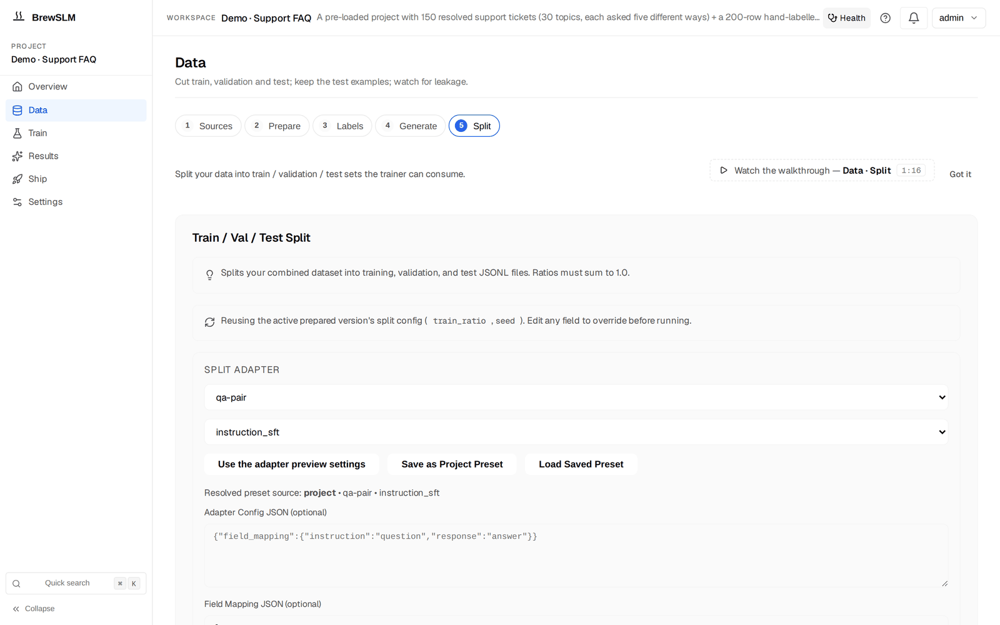

Clean and prepare: the manifest is the source of truth
After this lesson you can run the optional clean stage (Data → Prepare), understand what the Split step produces, and explain what the manifest records about a split and how training and evaluation use it.
In Track 2 you tokenized examples, built the loss mask, and split train/val by hand. BrewSLM folds the cleaning and splitting into two stages whose output is a set of split files plus a record of what went into them: the manifest. The tokenizing and masking move into the trainer.
05 Clean (optional)
If your rows are raw documents rather than tidy pairs, the clean stage processes them: it emits cleaned text, chunk JSONL, and per-document metadata: PII findings, a quality score, and a text hash. In the workspace this is Data → Prepare (/project/<id>/data?step=cleaning), the Cleaning Configuration card:
- Chunk Size (chars): default 1000, from 100 to 10,000. Chunks overlap by 100 characters; the overlap is an API field (
chunk_overlap, 0–500, smaller than the chunk size) with no control in the card. - Redact PII & Secrets: on by default.
- Mask Toxic Language: off by default.
- Remove repeated page headers and footers: on by default; turn it off when the layout matters.
Press Clean All Documents; the quality and safety scans sit in the step's Details drawer. It runs as a background task with task_id polling, so a big cleaning pass never blocks past the proxy timeout. It emits no RunEvent today; the reason codes cleaning_pii_block and cleaning_outlier_threshold_exceeded are declared in the taxonomy but not emitted. For already-clean classification pairs like our sentiment data, you can skip it.
06 Prepare — build the manifest
Prepare is the Data → Split step (/project/<id>/data?step=dataprep, the Train / Val / Test Split card). It takes your cleaned + synthetic rows and the project's split adapter and produces:
prepared/
manifest.json # the record of the split: counts, schema, task_profile,
# output_schema.scoring_mode, paths, hashes
train.jsonl # the training split
val.jsonl # the validation split
test.jsonl # the held-out test split ("test examples" in the UI)
versions/<v>/ # a snapshot of each split runThat split is the platform doing your train_test_split from Track 2, and the held-out test.jsonl is what the pass/fail rules score against later (Results → Verdict).

Split options
The defaults are the safe ones; these are the knobs worth knowing (Lesson 1.7 explains why each one matters):
- Dedup (
dedup_rows, on by default): exact and near-duplicate rows are dropped before the split, so one sentence can't land in both train and test. The counts go to the manifest'sdedup_report. - Stratify By Field (
stratify_by): rows are grouped by a field (for examplelabel) and each group is split at the same ratios, so a rare class still reaches val and test. Groups of fewer than 3 rows go to train and are listed instratification_report. Leave it blank and the rows have a categoricallabel: the split stratifies by it on its own (stratify_auto: truein the manifest). - Disjoint By Field (
disjoint_by): rows are grouped by a key (author, template, source document) and each group goes whole to one split, the guard against same-key leakage. It and stratify are mutually exclusive. - Keep the current test examples (
keep_test): a re-split keeps today'stest.jsonlrows verbatim and re-splits only train and validation; rows with the same text as a kept test row are removed from train and val. Use it when you add data and want the next run scored on exactly the same rows. The manifest'skeep_testreports what was kept and excluded. - Use my own train / val / test files: imports a predefined split instead of drawing one. Train is required, validation and test are optional, and you choose what happens when a train row also appears in validation or test (Stop and show me, or drop it from train). A later random re-split will not silently replace your own test file: keep it, or tick the box that replaces it.
- Re-split with dedup: when the data health scan finds rows shared between splits (
leakage.split_overlap), its action re-runs the split with dedup, inheriting the active version's ratios, seed, adapter and stratify / disjoint setting, and the signal clears. - Versions: each split run is snapshotted under
prepared/versions/<v>/, and the step's Details drawer lets you make an earlier one active again. Only the 10 newest snapshots are kept; older ones are pruned.
From Track 2: where did tokenization and the loss mask go?
They didn't disappear; they moved into the trainer (backend/scripts/train.py). It applies the chat template, builds input_ids/labels, and masks the prompt with -100, exactly the mechanics you wrote in Lesson 2.4, driven by the run's task type and chat template. The manifest records the task_profile and scoring_mode, which evaluation uses to pick and configure its task handler; handlers are evaluation-only (they build eval prompts and score() outputs). You declared the what; the trainer and the evaluator do the how.
The manifest is the contract
The manifest records which rows, schema, scoring mode and file hashes a split produced. Training reads the split files it lists (prepared/train.jsonl and val.jsonl). Evaluation reads its task profile and scoring mode from it: when a run is scored, the handler is chosen from the manifest's task_profile (falling back to the run's own task type only when the manifest has none), and the structured-extraction handler takes its scoring mode from output_schema.scoring_mode, defaulting to field_match. Export writes a run manifest of its own.
Here is a trimmed real prepared/manifest.json for a sentiment project. The keys are the ones the Split step writes; the values are illustrative:
{
"seed": 42,
"splits": { "train": 1606, "val": 201, "test": 201 },
"file_hashes": { "train": "3f9a…", "val": "c41e…", "test": "8b07…" },
"prepared_version": 4,
"adapter_id": "classification-label",
"task_profile": "classification",
"output_schema": { "scoring_mode": "field_match", "required": [] },
"stratify_by": null,
"stratify_auto": true,
"stratification_report": {
"stratify_field": "label", "group_count": 3,
"missing_count": 0, "small_groups_train_only": [], "per_group": [ … ]
},
"disjoint_by": null,
"dedup_requested": true,
"dedup_report": { "input_count": 2031, "kept_count": 2008, "dropped_count": 23 },
"keep_test": null,
"provenance": {
"by_source": {}, "unattributed": { "train": 1606, "val": 201, "test": 201 },
"excluded_rag": 0, "eval_routed_to_test": 0, "licence_warnings": [], …
}
}The full file also carries file_paths, the ratios and resolved split config, the chat template, the adapter config and field mapping, and the dataset version numbers. That record is what your script never had: the file hashes let you tell whether two runs saw the same data. Change the data and you get a new manifest with new hashes, not a silently different result from the same code. Beside file_hashes the manifest has content_hashes, which ignore the source-document stamp on each row: re-importing the same files changes the file hash but not the content hash, and Compare and the lift check use the content hash to recognise the same test rows. (This file is the prepared split's manifest; the project-level brewslm.yaml is a different thing, Lesson 3.11.)
Key idea
The Split step turns reviewed rows into a manifest plus train / val / test splits, deduplicated and, where it can, stratified by default. The manifest records the rows, task profile, scoring mode and file hashes of that split, so you can tell what any run trained and was scored on. The tokenization and masking you did by hand now happen in the trainer.
Key terms
- Clean stage
- Optional processing of raw documents into cleaned text + chunks + PII/quality metadata (Data → Prepare).
- manifest
- prepared/manifest.json — the record of what a split produced: row counts, schema, task_profile, scoring_mode, file paths and file hashes. Training reads the split files; evaluation reads the task profile and scoring mode from it.
- train/val/test split
- train.jsonl, val.jsonl and test.jsonl produced by Data → Split; the platform's train_test_split. The test split is the UI's "test examples".
- task_profile
- The declared task type recorded in the manifest, used by evaluation to pick its task handler.
- scoring_mode
- How outputs are scored, recorded in the manifest's output_schema; the structured-extraction handler reads it (default field_match).
- keep_test
- Re-split option that keeps the current test examples verbatim and re-splits only train and validation, so runs before and after are scored on the same rows.
- stratify_by / disjoint_by
- Split options: split each group of a field at the same ratios (rare classes reach val/test), or send each group whole to one split (no same-key leakage).
Check yourself
Answers are saved to this browser.